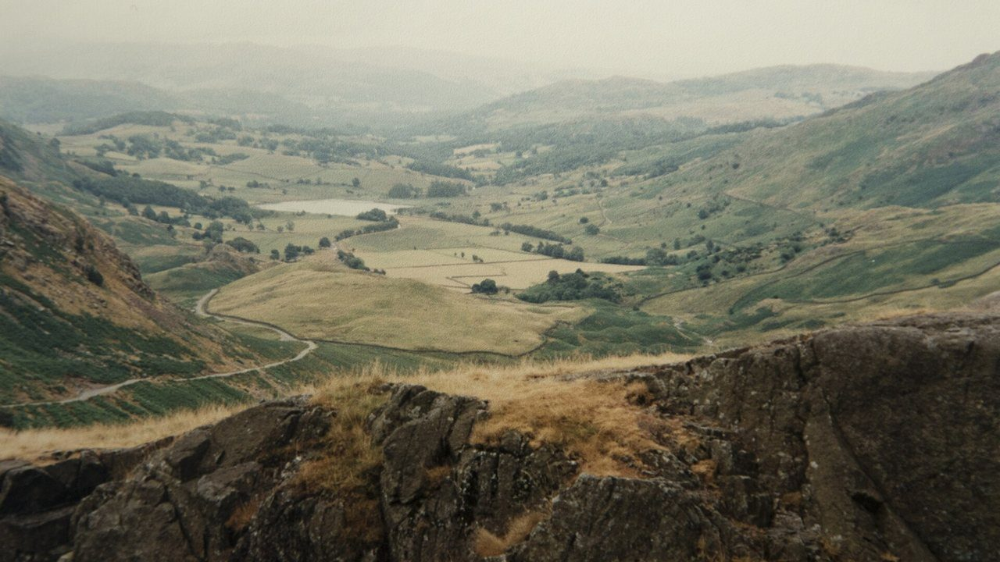

Race, Hardknott Pass

Behind
Best +0:01
371W
Target 418 W-47 W
- Cadence
- 87rpm
- Heart
- 140bpm
- Speed
- 26.5km/h
Cool-down11 of 11
1:06
Finish
-8.2%
387 m climbed
9.86 km
11
Resistance / 32
Solo races your best-time ghost: position reads Ahead or Behind, and solo alone gets a Pause button. Frozen at 23:54.